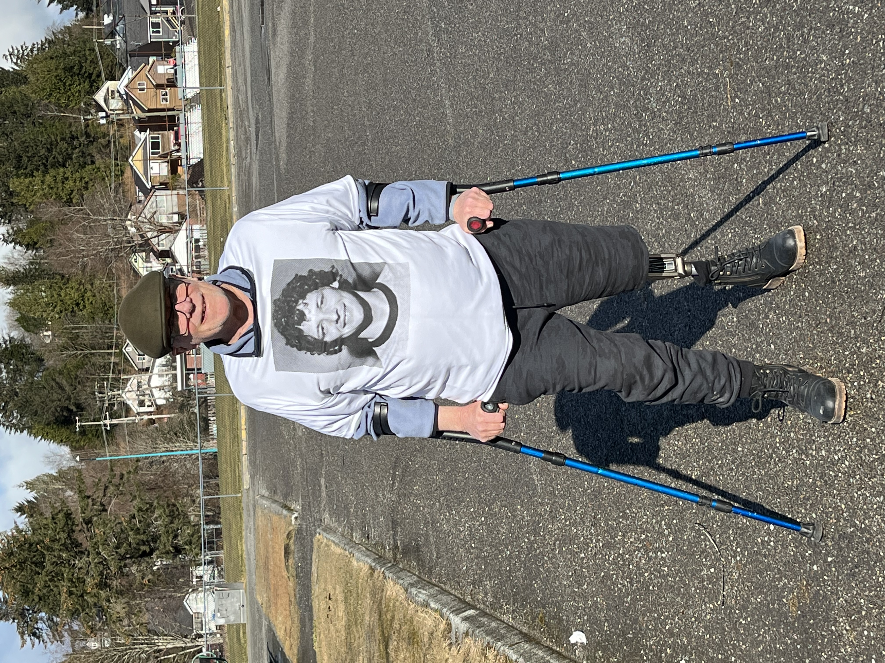
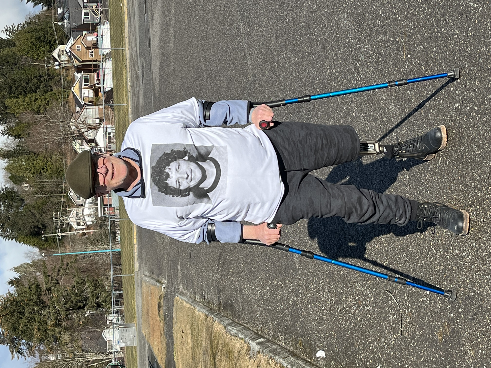
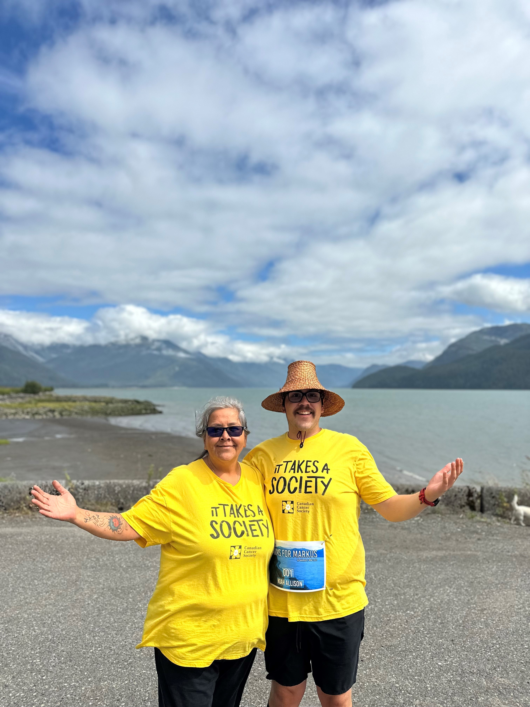
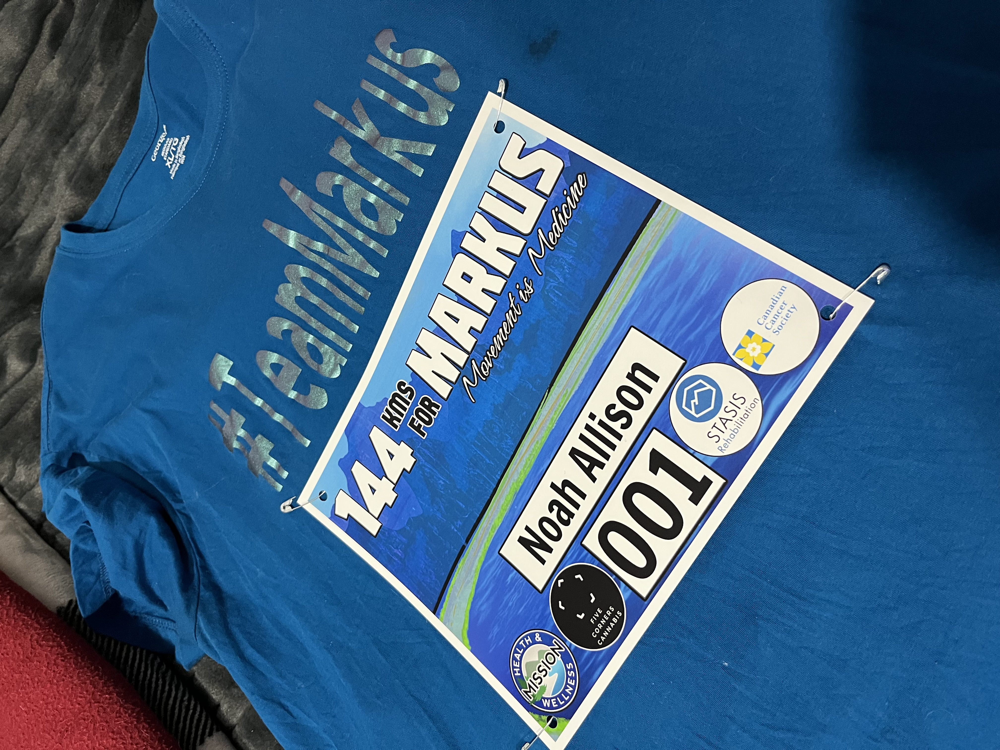
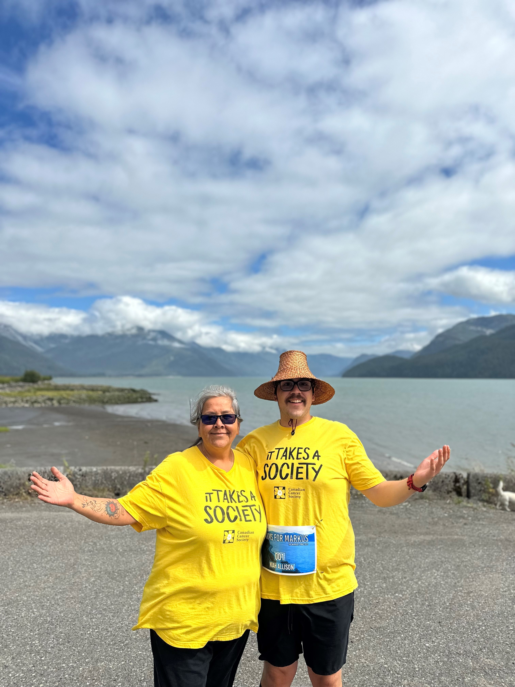
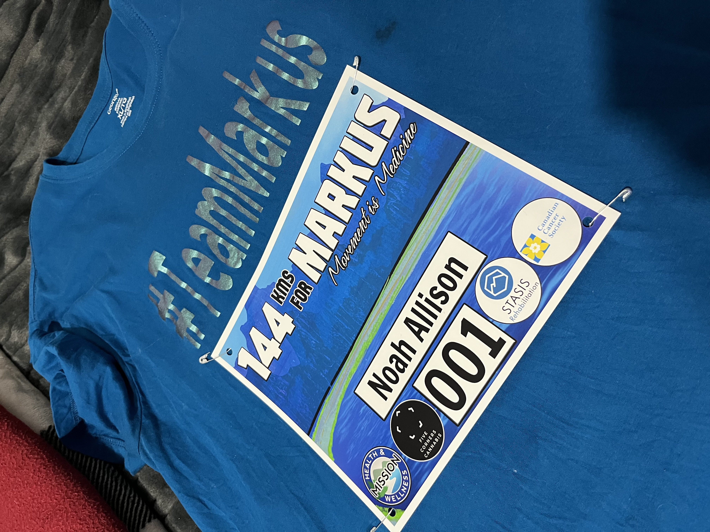

Mark Allison, Markus as we called him, was born in Ottawa, spent his younger years there, but once he came west, he never looked back. And eventually settled in Prince Rupert, where he began a career as a log scaler, within a few years, he met Char and got married, and soon became a father to Noah. And making a long story short, well Markus was the GOAT, as he was definately one of a kind, as he enjoyed laughing, working hard to provide for his family and was exceptionally proud of his son Noah. They both share the passion and knowledge of music and you can ask Noah anything about the Beatles, he will know the answer. Markus was passionate about his guitar playing, especially when it came to kitchen and campfire gigs. And eventually wrote his own song, called One Good Leg. He evenually began posting other songs and you can listen here. Link to Markus music
Markus sadly got cancer in the beginning of 2020, and his journey was like no other. Along the way, he unfortunately lost his bladder, and his left leg above the knee, due to complications with chemo. But that didnt darken his spirits, he took everything in stride and showed us what strength, courage and resiliency, was truly all about. He was definately a beast when it came to fighting cancer, and he took it in stride, no matter how many numerous medical trips. And when the battle seemed endless, thats when our son turned to running, as a way to leave the hospital and all its heartache behind. And this was truly the birth of Healing through endurance.
144 km for Markus into Miles for Markus

 


